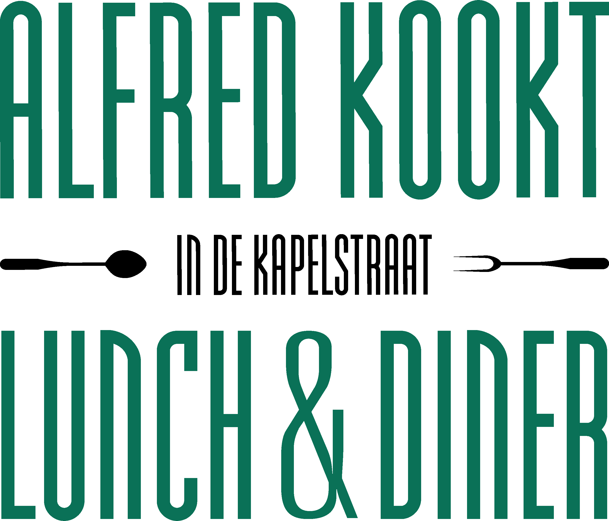
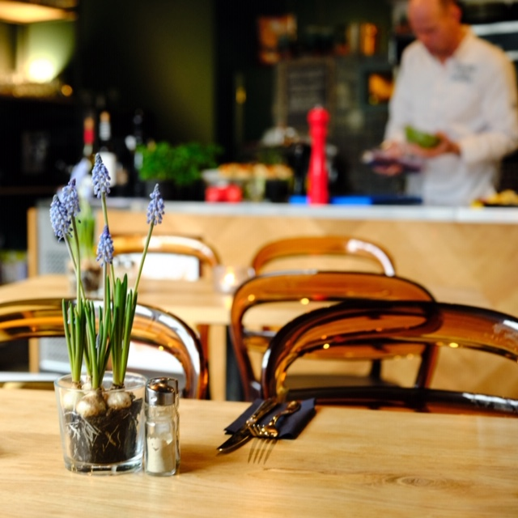
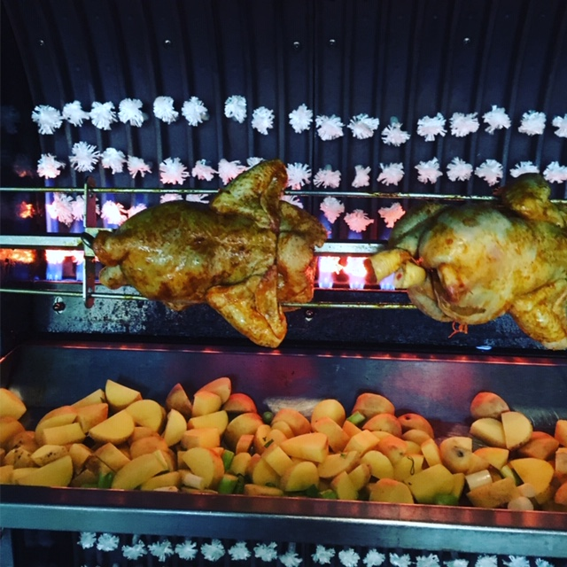
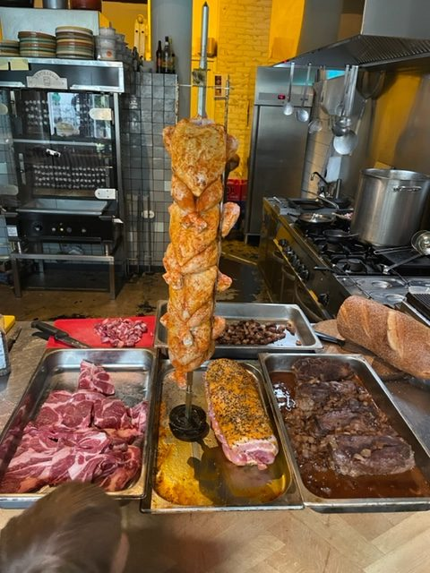
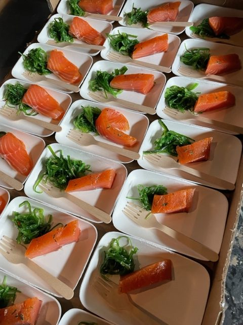
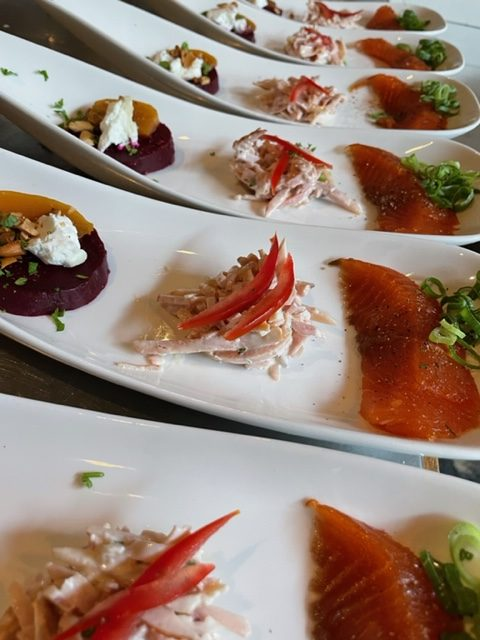

Wit
El Abuelo, Bodegas Piqueres
Fris, fruitig en zachte zuren. Fijn als aperitief, bij vis & kip.
5,75 / 27,00


Soep & rotisserie uit de open keuken, in het mooiste straatje van Apeldoorn. Hier opeten of mee naar huis: de keus is aan u.
#allesaltijdvers
Zonder toevoegingen, met wat de leveranciers uit de buurt brengen: homemade taart uit het Bakhuus, runderstoof, groentes van Miep’s farm, mooi desembrood belegd met Neeltjes zalm of kwaliteitsvlees uit de rotisserie.
De gerechten neemt u mee naar huis of eet u op bij ons. Makkelijk en vers.
Naar de menukaart


Alles ook mee te nemen. Heeft u een allergie of een wens? Vraag het Alfred gerust.
Omelet, uitsmijter of roerei, geserveerd met desembrood. Keus uit:
Geserveerd met desembrood & roomboter. Keus uit:
Voorgerechten worden geserveerd met desemtoast, boter & groene kruiden.
Hoofdgerechten worden geserveerd met salade & frieten.
Of overleg met Alfred wat u lekker vindt, dan maakt Alfred de #allesaltijdvers hapjes.
Prijs per glas / per fles
Fris, fruitig en zachte zuren. Fijn als aperitief, bij vis & kip.
5,75 / 27,00
Vol, boterig en uitgebalanceerd. Uitstekend bij vis, kip, kalf en vegetarische gerechten.
6,50 / 31,75
5,50 / 26,00
De perfecte bubbel om iets te vieren! Heerlijk bij lichte voorgerechten.
6,50 / 30,50
Perfect als aperitief en bij salades en zalm.
6,25 / 28,00
Klassieke wijn, fruitig & complex. Goed passend bij rund.
5,75 / 27,00
Donker fruit, zwoel met elegantie. Past goed bij vleesgerechten.
6,75 / 32,00
Iedere donderdag een wisselend ondernemersmenu, alleen to go.
Nu op het menu: surf & turf (dorade & porc belly) met een herfststamppot van o.a. aardappel, knolselderij en prei.
€ 11,50 per persoon


Alfred kookt graag voor jouw (zakelijke) evenementen. En wil je je verjaardag vieren bij Alfred Kookt? Dat kan ook.
Vanaf 20 personen kun je Alfred Kookt ook exclusief reserveren voor je gezelschap.
Mail over je feest of cateringVraag dan naar onze cadeaubon!
Reserveren gaat per e-mail. U krijgt binnen 1 dag antwoord.
Liever bellen? 06 5589 8433
| Maandag | gesloten |
|---|---|
| Dinsdag | gesloten |
| Woensdag | vanaf 10.00 uur |
| Donderdag | vanaf 10.00 uur |
| Vrijdag | vanaf 10.00 uur |
| Zaterdag | vanaf 10.00 uur |
| Zondag | vanaf 10.00 uur |